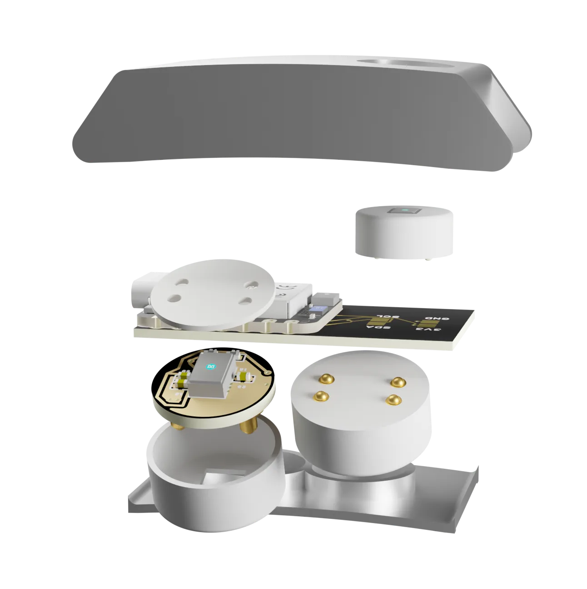

Raw biosignals after the E4 era
Open API, exportable data, EDA, PPG, temperature, motion, and a lower-friction hardware path.
Use cases
OpenPulse is not sold as one generic fitness product. It is configured around a pilot: the signals, the environment, the data path, and the partner's workflow.

Pilot segments
Open API, exportable data, EDA, PPG, temperature, motion, and a lower-friction hardware path.
EDA and HRV context for consultants who already run surveys and interviews.
Gas, temperature, heart-rate context, and local alarms in one configurable band.
EDA and HR pipelines for consumer research, stimulus testing, and controlled response studies.
Configured bands for premium recovery, stress, and retreat experiences.
Turn pulse, motion, EDA, and environment into live media control signals.
For data-sovereign users, developers, and quantified-self people who hate sealed clouds.
Where the fit is sharpest
OpenPulse becomes interesting when the partner already has a workflow, but the existing wearable hardware is too closed, too generic, or missing one key signal.
01 / Research
For labs, OpenPulse is a configurable raw-signal wristband: EDA, PPG, temperature, motion, documented processing, and exportable data for repeatable pilots.
With the Empatica E4 retired, research teams still need inspectable wearable biosignals without moving into a closed consumer ecosystem.
02 / Safety
A gas spike means more with body context. A physiological spike means more with environmental context. OpenPulse can join both into local alerts or exports.
One wristband can monitor worker context and ambient hazards instead of splitting the pilot across separate devices.
EDA and HRV context for consultants who already run interviews, workshops, and surveys.
EDA and pulse pipelines synchronized to media, retail, or product-testing stimuli.
Configured guest experiences for recovery, stress trends, and resort-owned workflows.
MQTT outputs turn pulse, EDA, motion, or environment into a control surface.
Data-sovereign users, quantified-self builders, and open-source developers who hate sealed clouds.
Pilot fit
OpenPulse is strongest when a partner has a clear question: what signal, on whom, in which context, and what decision should the output support?
Talk to us